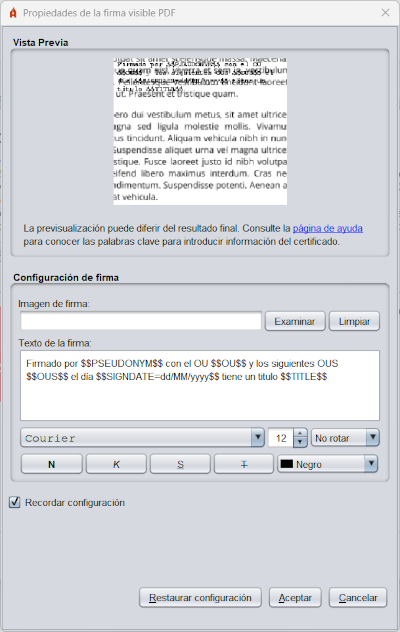
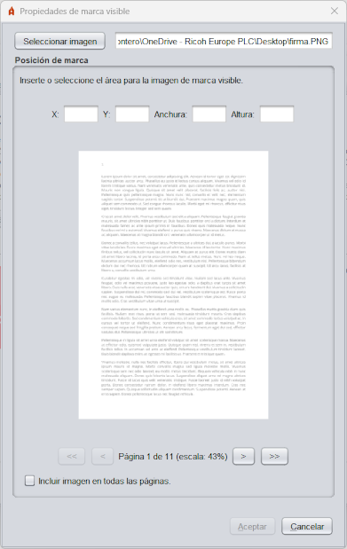

Propiedades de las firmas visibles PDF
Al habilitar la creación de firmas visibles PDF, se dará al usuario la posibilidad de seleccionar
un área de firma sobre el PDF que vaya a firmar en formato PAdES.

Este menú permite utilizar el ratón para seleccionar un área rectangular de una de las páginas del
PDF.
- X: Número de píxeles en el eje X en el empieza el área de firma.
- Y: Número de píxeles en el eje Y en el empieza el área de firma.
- Anchura: Número de píxeles que se extiende en horizontal el área de firma.
- Altura: Número de píxeles que se extiende en vertical el área de firma.
- (Previsualización de la página del PDF): El usuario debe hacer clic sostenido y arrastrar
el ratón sobre este área para seleccionar el área visible de firma. Las posiciones y el tamaño
del área de firma se expresa en píxeles con respecto a la escala en la que se muestra la imagen de la
página.
- <<: Botón para desplazar la visualización a la primera página del PDF.
- <: Botón para desplazar la visualización a la página anterior del PDF. Puede
reproducirse este comportamiento pulsando la tecla "cursor izquierdo" de su teclado.
- >: Botón para desplazar la visualización a la siguiente página del PDF. Puede
reproducirse este comportamiento pulsando la tecla "cursor derecho" de su teclado. Si nos encontramos en la
última página del PDF esta opció nos permitirá crear una página en blanco
al final del documento en la que se podrá insertar la firma.
- >>: Botón para desplazar la visualización a la última página del PDF.
En esta misma ventana, en la parte inferior, se permite indicar la página o páginas donde debe aparecer la firma visible. Las
opciones que se permiten son las siguientes:
-
Página actual: La firma visible aparecerá en la página que se haya seleccionado
en el selector de posición superior.
-
Todas las páginas: La firma visible aparecerá en todas las páginas del documento.
-
Selección de páginas: En esta opción se permite seleccionar la página o
rango de páginas donde aparecerá la firma visible. Si se desea indicar una página o
varias páginas donde estampar la firma visible, es posible indicando página a página con
una separación de comas (
1,4,7: Se estampa en las páginas 1, 4 y 7) o indicando un
rango de páginas a través de un guión (1-8: Se estampa en las
páginas desde la 1 hasta la 8). También se permite indicar las páginas según su
posición desde el final del documento. Para eso se utilizará la posición con un valor
negativo (-2: Estampará la firma en la penúltima página). Estos mecanismos
se pueden combinar. Por ejemplo:
- 3-6, 8, 10--1: Indica que se estampará en las páginas desde la 3 a la 6, en la
8 y desde la 10 a la última página.
El botón que contiene un signo de interrogación (?) permite abrir la página de ayuda para la firma visible.
El área de firma desaparecera al cambiar de pantalla del PDF. Seleccione el área para la firma visible
del PDF y a continuación, pulse el botón Siguiente.
A continuación, se mostrará una nueva ventana en la que el usuario podrá configurar el aspecto
de la firma.

Este interfaz permite configurar las siguientes propiedades para la firma visible:
- Vista previa. Puede configurarse el fichero de imagen pulsando sobre
la previsualización de la firma. No se permiten imágenes con transparencias.
- Configuración de firma:
- Imagen de firma: Ruta de la imagen con la rúbrica de firma. Puede seleccionarse
mediante el botón Examinar y eliminarse mediante el botón Limpiar. No
se admiten transparencias en la imagen y se omitirán en caso de encontrarse.
- Texto de firma: Texto a mostrar en la firma del PDF. Para la configuración del
texto que se desea mostrar en la firma es posible utilizar una serie de palabras clave que serán
sustituidas por los textos apropiados del titular o emisor del certificado de firma en el momento de
firmar. Estas son:
- $$SUBJECTCN$$
- Nombre común (CN, Common Name) dentro del X.500 Principal del titular del certificado de firma.
- $$ISSUERCN$$
- Nombre común (CN, Common Name) dentro del X.500 Principal del emisor del certificado de firma.
- $$CERTSERIAL$$
- Número de serie del certificado de firma.
- $$SIGNDATE=PATRÓN$$
- Fecha de la firma, donde PATRÓN debe indicar el formato en el que debe mostrarse la fecha, siguiendo el esquema definido por Oracle para la clase SimpleDateFormat.
- $$GIVENNAME$$
- Nombre del titular (G, Given Name) declarado en el certificado. Este valor podría no aparecer en el certificado, en cuyo caso, el patrón se sustituirá por cadena vacía.
- $$SURNAME$$
- Apellidos del titular (SN, Surname) declarado en el certificado. Este valor podría no aparecer en el certificado, en cuyo caso, el patrón se sustituirá por cadena vacía.
- $$ORGANIZATION$$
- Organización (O, Organization) del titular declarada en el certificado. Este valor podría no aparecer en el certificado, en cuyo caso, el patrón se sustituirá por cadena vacía.
- $$PSEUDONYM$$
- Seudónimo del certificado. Este valor podría no aparecer en el certificado, en cuyo caso, el patrón se sustituirá por cadena vacía.
- $$OU$$
- Unidad Organizativa (OU, Organization Unit) del certificado. Este valor podría no aparecer en el certificado, en cuyo caso, el patrón se sustituirá por cadena vacía.
- $$OUS$$
- Listado de Unidades Organizativas del certificado. En caso de que hubiese más de una, se presentarían todas separadas por ", ". El certificado podría no tener definidas Unidades Organizativas, en cuyo caso, el patrón se sustituirá por cadena vacía.
- $$TITLE$$
- Información sobre el puesto o rol del titular del certificado. Este valor podría no aparecer en el certificado, en cuyo caso, el patrón se sustituirá por cadena vacía.
- $$REASON$$
- Razón por la que se firma el PDF, configurada la operación de firma mediante la propiedad "signatureReason". El patrón se sustituirá por cadena vacía si no se hubiese establecido este valor.
- $$LOCATION$$
- Ciudad en la que se firma el PDF, configurada la operación de firma mediante la propiedad "signatureProductionCity". El patrón se sustituirá por cadena vacía si no se hubiese establecido este valor.
- $$CONTACT$$
- Información de contacto del firmante del PDF, configurada la operación de firma mediante la propiedad "signatureContact". El patrón se sustituirá por cadena vacía si no se hubiese establecido este valor.
- Al texto se le pueden aplicar las siguientes opciones de formato:
- Fuente de letra.
- Tamaño de letra.
- Rotación del texto.
- Estilo de fuente (Negrita, Cursiva, Subrayado o Tachado).
- Color del texto.
La casilla "Recordar configuración" permite guardar la configuración establecida (texto, imagen y estilos) para utilizarla en las siguientes firmas. El botón "Restaurar configuración por defecto" devolverá la configuración del panel a los valores por defecto.
Si no se desea agregar una firma visible al PDF, antes de pulsar el botón firmar en la pantalla de firma, asegúrese
de que no se encuentra seleccionada la casilla "Hacer la firma visible dentro del PDF".
Propiedades de las marcas visibles
Al habilitar la inserción de marcas visibles en el PDF, se dará al usuario la posibilidad de seleccionar
un área sobre el PDF que vaya a firmar.

Este menú permite utilizar el ratón para seleccionar un área rectangular en una o todas las páginas del
PDF.
- Seleccionar imagen: Al pulsar este botón se abrirá una ventana en la que podrá seleccionar
la imagen de marca. No se admiten transparencias en la imagen y se omitirán en caso de encontrarse
- X: Número de píxeles en el eje X en el que situar la marca.
- Y: Número de píxeles en el eje Y en el que situar la marca.
- Anchura: Número de píxeles que se debe extender en horizontal la marca.
- Altura: Número de píxeles que se debe extender en vertical la marca.
- (Previsualización de la página del PDF): El usuario debe hacer clic sostenido y arrastrar
el ratón sobre este área para seleccionar el área en el que se colocará la marca.
- <<: Botón para desplazar la visualización a la primera página del PDF.
- <: Botón para desplazar la visualización a la página anterior del PDF. Puede
reproducirse este comportamiento pulsando la tecla "cursor izquierdo" de su teclado.
- >: Botón para desplazar la visualización a la siguiente página del PDF. Puede
reproducirse este comportamiento pulsando la tecla "cursor derecho" de su teclado.
- >>: Botón para desplazar la visualización a la última página del PDF.
- Incluir imagen en todas las páginas: Casilla para seleccionar que la marca se inserte en todas
las páginas del PDF.
El área de marca desaparecera al cambiar de página del PDF. Seleccione la página, imagen y área para la marca visible
en el PDF y a continuación, pulse el botón Aceptar.
Si no se desea agregar una marca visible al PDF, antes de pulsar el botón firmar en la pantalla de firma, asegúrese
de que no se encuentra seleccionada la casilla "Insertar una marca visible dentro del PDF".